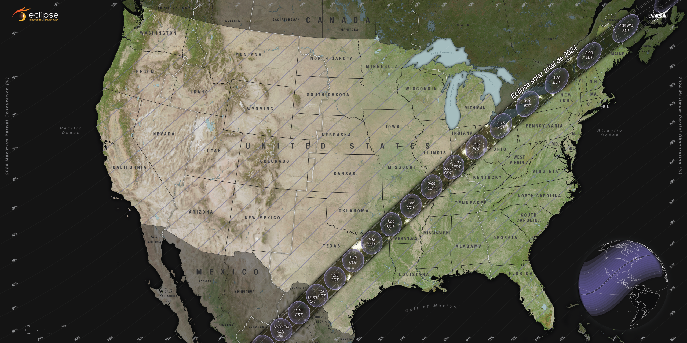

Este lunes 8 de abril tendrá lugar uno de los eventos astronómicos más esperados del último tiempo: el eclipse solar total, donde el día se transformará de noche por algunos momentos. Sin embargo, solo algunas partes del mundo serán las afortunadas para ver el eclipse solar del 8 de abril. Para quienes vivan en lugares en lugares en los que no se observará, la NASA contará con una transmisión en vivo en la que lo podrán apreciar.
Desafortunadamente para nuestro país, el eclipse solar total del 8 de abril no podrá verse desde Chile. De acuerdo con la NASA, este recorrerá Norteamérica, y será presenciado por México, Estados Unidos y Canadá.
De acuerdo con el portal Time and Date, el comienzo del eclipse se podrá ver en algunas ubicaciones pasadas las 11.40 de la mañana en hora de Chile, mientras que su peak será a las 14:17 horas, y la última ubicación en verlo será a las 16.52 horas.